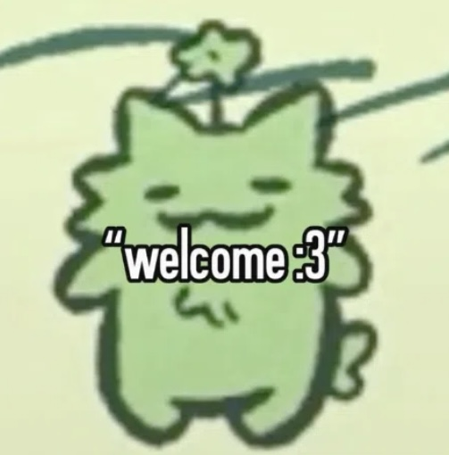
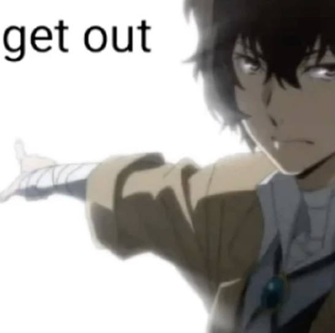
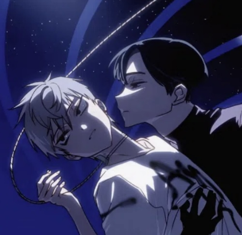
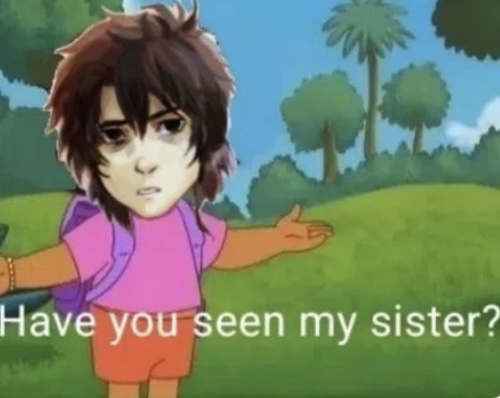

I am Arlan. I am a demiboy meaning I am trans. I use he/they. Sometimes I feel like a boy and sometimes I don't but I don't feel like a girl.
My birthday is October 4th 2005 making me a Libra and born in the year of the Rooster. I am a university student doing a degree in fashion communications and promotions but I am doing a one year diploma in Creative Computing.
I adore J-fashion especially gyaru and lolita. I specialise mostly in womanswear but I am learning more about menswear. I love to style people and avatars in games like gacha life, genshin impact via miliastra wonderland and so on.
I love collecting figurines, dancing, listening to music and playing games. Mostly genshin and honkai star rail and occasionally minecraft every now and then though it's more fun with friends. I have hypersomnia so I sleep a lot and naps don't help with my excessive daytime sleepiness. I manage lmao.
With my own aesthetic, I tend to dress feminine. Despite my gender, I am a femboy. I love dressing up as a girl in girl clothes and my main aesthetic is mostly consisted of various hyperfeminine substyles e.g. dollette, angelcore, cutecore, yumekawaii etc. however sometimes I will dress a bit on the grunge side if I don't want to go through the whole effort of being hyperfeminine.
I don't look much different from my gacha avatar. I'm just a human with brown eyes rather than an arctic fox hybrid with silver eyes. That's just my representation of myself in gacha life since I am a therian. My theriotype is an arctic fox. I love monster energy too! RIP Rio Punch which is soon to be discontinued as of writing this ;-;
Anyway I hope you enjoy my page of rants, rambles and fashion.